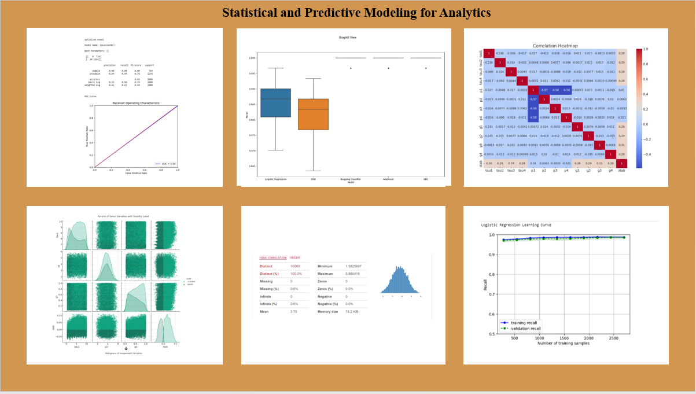
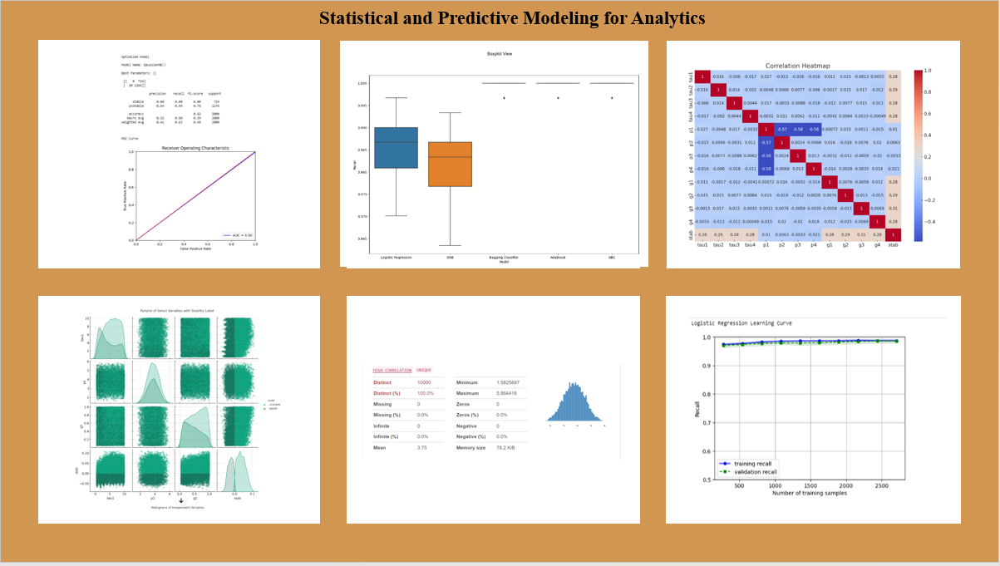
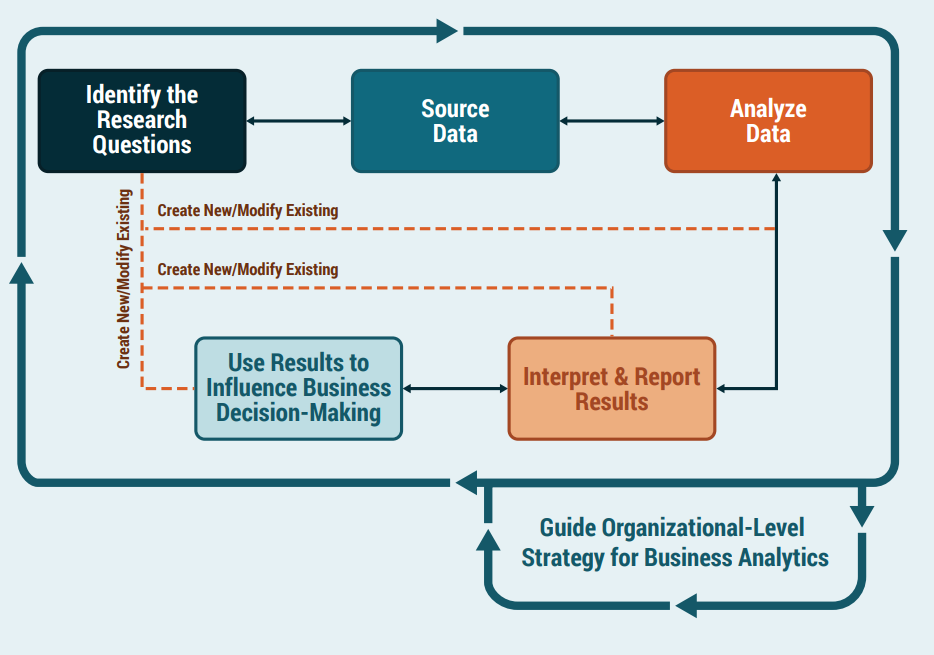
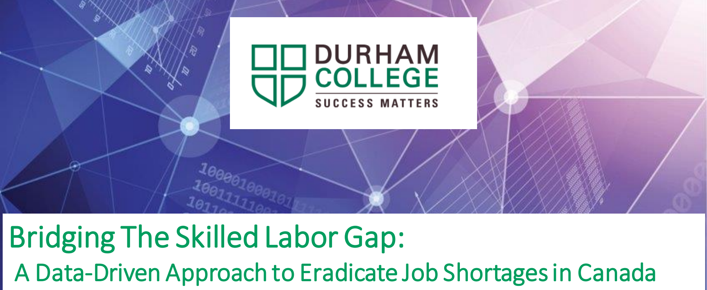
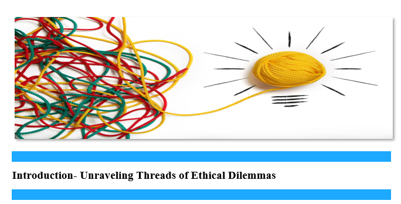

In this project, I have meticulously crafted a comprehensive financial plan for a startup company that is driven by Key Performance Indicators (KPIs).
This three-year budget and plan is the result of extensive research and analysis, and it aims to provide a clear roadmap for the company's success. By utilizing KPIs, we can ensure that the company stays on track towards achieving its goals and objectives. With this financial plan in place, the startup company will have the necessary resources and strategies to make informed decisions and thrive in today's competitive market.
.
 

I am an expert in Statistics and predictive Modeling, possessing an extensive knowledge of various techniques to analyze data effectively.
My skills include performing regression analysis, building logistic regression models,
conducting discriminant analyses, utilizing regularization techniques, and implementing decision tree-based algorithms like random forest.
With my mastery of these methods, I can confidently tackle any data-related challenge and provide accurate insights to drive informed decision-making.
I like exploring different dataset with the help of Exploratory Data Analysis which provide details about
Correlation Analysis, Variable distribution, Anamolies and outliers.

Expressing ideas through Power BI visualizations is a powerful way to connect with the audience,
and I aim to make it as effective as possible.Creating visualizations in Power BI is a highly effective means of communicating complex data in a simple and intuitive manner.
By leveraging the power of data visualization, I can provide stakeholders with valuable insights and help them make informed decisions. As an expert in Power BI,
I strive to create compelling and engaging visualizations that are not only aesthetically pleasing but also convey the underlying message in the most effective manner.
Whether it is creating charts, graphs, or other visual aids, I pay close attention to every detail, from color schemes to labeling,
to ensure that the visualizations are easy to understand and leave a lasting impact on the audience.

Project Management is a fascinating field for as it involves various stages such as Project Analysis,
WBS Worksheets, Critical Path, Risk Register Analysis, Status Report, and Change Request.
It's an effective way to achieve milestones in any project. I have learned ways to succeed in any project, with the help of Project Management.
It's a remarkable opportunity to elevate any project to the next level with its various stages.

To excel in business analysis, I possess a deep sense of business acumen.
which involves having a comprehensive understanding of how different aspects of a business work together, including its operations, finances, and market position. With this knowledge,
I am a skilled business analyst who can analyze complex data sets to identify trends, patterns, and opportunities that could help a business grow.
Additionally, I am a competent business analyst who can also provide recommendations that are not only insightful but also practical and actionable,
ultimately delivering real value to the organization.

My capstone project analyzed and predicted surplus of labor in Canada, showcasing its highly skilled workforce.For my capstone project, I conducted a comprehensive analysis of the surplus of labor in Canada.
Through extensive research and data analysis, I aimed to predict the future trends of the labor market in Canada.
The project was centered around showcasing the abundance of highly skilled labor in Canada and how this could be leveraged to further improve the country's economy.
I looked into various factors such as education, demographics, employment rates, and economic policies to gain a better understanding of the labor market in Canada.
The project was an excellent opportunity to gain practical experience in data analysis and research, and I am proud of the insights and predictions that I was able to derive from the data.

Data collection and ethical leadership are important responsibilities for us as gatekeepers and decision-makers in business and data analysis.As professionals in the fields of data and business analysis,
we play a crucial role in collecting and interpreting data that informs decision-making.
Our responsibility extends beyond just collecting data, however. We must also prioritize ethical leadership and ensure that we are making decisions that are fair, trustworthy, and in the best interest of all stakeholders.
As gatekeepers, people rely on our judgments and the insights we provide to guide them in making informed decisions.
It is our responsibility to ensure that the data we collect is accurate, relevant, and presented in a clear and understandable manner. Only then can we truly be effective as data analysts and business analysts.
{kind=link}
{kind=link}